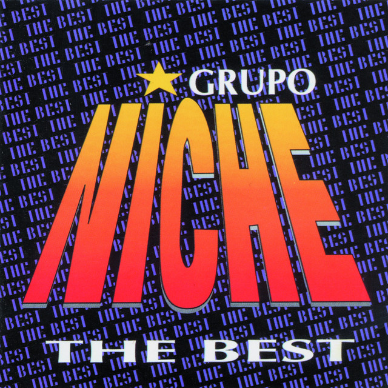

El Grupo Niche es una reconocida agrupación de salsa originaria de Colombia, considerada una de las más influyentes y exitosas en el género de la salsa en América Latina.
El grupo fue fundado en 1978 en la ciudad de Cali por Jairo Varela, quien se convirtió en el líder y director musical de la agrupación. El nombre "Niche" fue inspirado por el barrio homónimo de Cali donde Jairo Varela creció. Desde sus inicios, el Grupo Niche se destacó por su estilo único de salsa, combinando ritmos tropicales y letras que abordaban temas sociales y románticos.
El grupo se formó con músicos talentosos y experimentados de la escena musical de Cali. Desde sus primeros años, el Grupo Niche mostró un estilo distintivo que combinaba ritmos afrocaribeños, jazz y elementos de música colombiana. Esto les permitió destacarse y diferenciarse de otras agrupaciones de salsa de la época.
La música del Grupo Niche ha sido reconocida por sus letras que abordan temas sociales, amorosos y cotidianos, así como por su sonido distintivo y sus arreglos musicales sofistcados.
Varela, conocido como "El Maestro Jairo Varela", fue una figura clave en el desarrollo y popularización de la salsa en Colombia y América Latina.
Jairo Varela fue el principal compositor de las canciones del Grupo Niche, y su liderazgo y visión artística fueron fundamentales para el éxito de la agrupación. Tras su fallecimiento en 2012, el grupo continuó, con diversos cambios en su alineación, pero manteniendo vivo el legado y el estilo musical que nos caracteriza.
El Grupo Niche ha experimentado cambios en su alineación a lo largo de los años, pero ha mantenido su esencia musical y su legado como una de las bandas más emblemáticas de la salsa. Hemos realizado giras por diferentes países, participando en festivales y conciertos que han sido recibidos con gran entusiasmo por parte de sus seguidores.
El fallecimiento de Jairo Varela en 2012 fue un golpe para la agrupación, pero continuamos su legado bajo la dirección de otros miembros del grupo. A pesar de los cambios, el Grupo Niche sigue activo y se ha convertido en una institución de la música latina, influyendo en generaciones posteriores de artistas y siendo una referencia importante en el mundo de la salsa.
A lo largo de su carrera, el Grupo Niche ha lanzado numerosos éxitos y ha obtenido reconocimiento internacional. Algunas de sus canciones más populares son:
Coloca tus datos y nos contactaremos contigo: